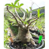
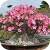
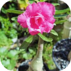

Adenium obesum
NOMES(s) POPULAR(ES)
Rosa-do-deserto
GÊNERO
Adenium obesum
FAMÍLIA
Apocynaceae
FLORA
flora nativa de regiões áridas e semiáridas da África Subsaariana e da Península Arábica
Imagens



Características
A Adenium obesum, conhecida popularmente como rosa-do-deserto, é uma planta perene e suculenta bastante utilizada em vasos e coleções botânicas. Ela pode atingir entre 1 e 3 metros de altura em seu habitat, dependendo do manejo, e possui crescimento moderado, destacando-se pelo seu tronco basal muito engrossado para armazenar água.
Suas folhas são brilhantes, de textura coriácea e têm formato alongado, surgindo dispostas em espiral nas pontas dos ramos com coloração verde-clara a acinzentada. A planta também produz flores extremamente vistosas, em formato de funil, que aparecem na primavera e no verão e são bastante atrativas pela diversidade de tons que vão do branco ao rosa, vermelho e vinho.
Outro destaque são seus frutos, que surgem como vagens delgadas e verdes cheias de sementes peludas, mas é preciso cuidado pois toda a planta é altamente tóxica se ingerida devido à sua seiva leitosa. A Adenium obesum prefere clima quente e seco, com boa exposição ao sol pleno, e se adapta melhor a solos muito arenosos e com excelente drenagem, pois não tolera o excesso de água.
Por ter um visual único e escultural, é muito usada para fins paisagísticos e decorativos, especialmente como planta de destaque em vasos expostos em varandas, terraços e jardins ensolarados.
Localização no
Campus

PRÓXIMO À
EDITAR
JARDIM
EDITAR
COORDENADA
EDITAR